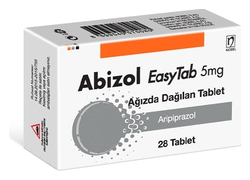

Abizol Easytab 5 mg Ağızda Dağılan Tablet, Tablet, 28 Adet

Ne için kullanılır
KT · Bölüm 1ABİZOL EASYTAB antipsikotikler olarak adlandırılan bir ilaç grubuna dahildir.
ABİZOL EASYTAB, 28 ağızda dağılan tabletlik formu ile soymalı alüminyum folyo/silikajelli folyo blister ambalajlarda kullanıma sunulmaktadır.
ABİZOL EASYTAB, yuvarlak, sarı, bir yüzü 5 baskılı, düz tabletlerdir.
ABİZOL EASYTAB, yetişkin ve ergenlerde (13-17 yaş), olmayan şeyleri duyma, görme veya hissetme, şüphecilik, yanlış düşünceler, tutarsız konuşmalar, davranışlar ve duygusal durumda durgunluk gibi belirtiler ile karakterize bir hastalığın tedavisi için kullanılır. Bu durumdaki hastalar aynı zamanda ruhsal çökkünlük içinde olabilir veya kendilerini suçlu, endişeli ya da gergin hissedebilirler.
ABİZOL EASYTAB, olağan dışı ve sürekli, taşkın ya da sinirli bir dönemin olması, aşırı derecede enerjinin olması, her zamankinden daha az uykuya ihtiyaç duyulması, düşünce
içeriğinde hızlanma ile birlikte ve bazen aşırı derecede tepkisel bir şekilde çok hızlı konuşma durumundaki yetişkinlerin tedavisinde ve bu durumun tekrarlamasının engellenmesinde kullanılır.
ABİZOL EASYTAB antidepresan tedaviye dirençli majör depresyon hastalarında antidepresan tedaviyi güçlendirmek için ekleme tedavisi olarak endikedir.
ABİZOL EASYTAB, 6 ilâ 17 yaşındaki çocuklarda ve ergenlerde otistik bozukluk ile ilişkilendirilen irritabilite belirtilerinin (başkalarına karşı agresif davranış, kasıtlı olarak kendine zarar verme girişimleri, öfke nöbetleri, ruh halinin hızla değişmesi) tedavisinde kullanılır.
ABİZOL EASYTAB, kısa aralıklarla meydana gelen istemsiz, hızlı, ani bedensel tikler ve ses tiklerinin oluşturduğu Tourette hastalığının tedavisinde endikedir.